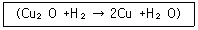
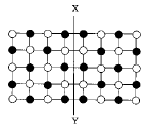
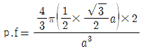
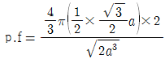
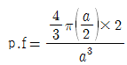
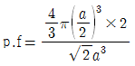
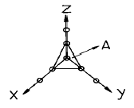
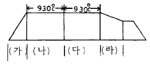

금속재료산업기사 (2004-03-07 기출문제)
1과목: 금속재료
1. 다음 격자결함 중 선결함에 해당 되는 것은?
- 원자공공
- 전위
- 적층결함
- 주조결함
(정답률: 75%)

2. 처음에 주어진 특정 모양의 것을 인장하거나 소성변형 된 것이 가열에 의하여 원래의 모양으로 되돌아 가는 것은?
- 항복융해합금
- 형상기억합금
- 압축성합금
- 비결정합금
(정답률: 86%)
3. 일정온도 영역과 변형속도의 영역에서만 300-500%이상의 연성을 나타내는 신소재의 명칭은?
- 초탄성합금
- 초소성합금
- 비정질합금
- 복합재료
(정답률: 44%)
4. 공석강의 탄소함량(%)은?
- 약 0.1
- 약 0.3
- 약 0.5
- 약 0.8
(정답률: 71%)
5. 황동 합금의 주성분은?
- Cu-Fe
- Cu-Zn
- Cu-Pb
- Cu-Sn
(정답률: 69%)
6. 니켈의 설명이 틀린 것은?
- 상온에서 결정구조가 면심입방격자이다.
- 철과 합금이 잘 된다.
- 구리와 합금이 잘 된다.
- 알루미늄과 무게가 같다.
(정답률: 66%)
7. 공석 탄소강의 조직은?
- Pearlite
- Austenite
- Cementite
- Ferrite
(정답률: 61%)
8. 마우러 조직도란 주철 중의 어떤 원소의 함량과 조직분포를 나타낸 것인가?
- C 와 Si
- C 와 Mn
- P 와 Si
- P 와 S
(정답률: 70%)
9. 철강 주물이 응고했을 때 응고 온도차에 따라 농도차이가 생기는 현상은?
- 공석
- 포석
- 편정
- 편석
(정답률: 47%)
10. 다음 중 비중이 가장 작은 것은?
- Al
- Mg
- Ti
- Ni
(정답률: 74%)
11. 림드강을 변형시킨 것으로서 용강을 주입 후 뚜껑을 씌워 용강의 비등을 억제시켜 림 부분을 얇게하여 내부의 편석을 적게한 강괴는?
- 킬드강
- 림드강
- 쎄미킬드강
- 캐프드강
(정답률: 44%)
12. 초내열강(초합금 = super alloy)의 합금 원소는?
- Ni, Co, Cr 등
- Pb, Mn, Zn 등
- Cs, Cu, Hg 등
- Al , Mg, Sn 등
(정답률: 62%)
13. 탄소 함유량이 가장 많은 것은?
- Pure iron
- Eutectic cast iron
- Eutectoid steel
- Armco iron
(정답률: 50%)
14. 용융점이 가장 높은 금속은?
- Fe
- W
- Hg
- Cu
(정답률: 74%)
15. 편석을 막기 위하여 모서리 부분을 둥글게 하는 것은?
- 라운딩
- 결정 경계
- 격자 상수
- 고우스트라인
(정답률: 86%)
16. 킬드강에 속하는 것은?
- 캠을 씌워 만든 강
- 탈산을 완전히 한 강
- 탈산을 하지 않은 강
- 강괴를 만든 다음 압연하여 풀림한 강
(정답률: 67%)
17. Ni-Cr계 합금의 특징 중 틀린 것은?
- 전기 저항이 대단히 작다.
- 내식성이 크고 산화도가 적다.
- Fe 및 Cu에 대한 열전 효과가 크다.
- 내열성이 크다.
(정답률: 69%)
18. 구리의 환원성 분위기에서 가열할 때 미세 기포나 작은 균열이 발생하는 현상은?

- 뜨임취성
- 고온취성
- 입계취성
- 수소취성
(정답률: 50%)
19. 모터, 단전기, 자기스위치, 변압기 등에 사용되는 고투자율 재료로써 소결금속자심이 아닌 것은?
- Fe-Si 계
- Fe-Al 계
- Fe-Ni 계
- Fe-S 계
(정답률: 69%)
20. 형상기억효과나 초탄성현상을 나타내는 합금이 아닌것은?
- Ti-Ni 계
- Cu-Al-Ni 계
- Cu-Zn-Al 계
- Mg-Cr 계
(정답률: 70%)
2과목: 금속조직
21. 철강의 공정(共晶)반응에 의하여 생긴 주 조직은?
- 펄라이트
- 오스테나이트
- 레데뷰라이트
- 페라이트
(정답률: 50%)
22. 전위 주위의 응력장에 용질원자가 모여 고착되어 기계적 성질에 영향을 주는 것은?
- 원자공공
- 코트렐 효과
- 프렌켈결함
- 전위의 상승
(정답률: 53%)
23. 금속에서 사용하는 기브스의 상율(F=n+2-P)식 중 성분의 수를 표시 하는 것은?
- F
- n
- 2
- P
(정답률: 50%)
24. 확산(diffusion)과 관련이 가장 작은 것은?
- 침탄(carburizing)
- 질화(nitriding)
- 담금질(quenching)
- 금속침투(metallic cementation)
(정답률: 36%)
25. 다음 그림에서 XY축을 경계로 좌우측의 원자들은 완전한 규칙배열로 되어 있으나 전체로 보면 XY축을 경계로 하여 대칭으로 되어있다. 이러한 원자배열의 구역은?

- 완화 구역
- 자성 구역
- 역위상 구역
- 전이 구역
(정답률: 58%)
26. 면심입방 결정구조에서 단위격자 소속 원자수가 4일 때 배위수는?
- 1개
- 4개
- 7개
- 12개
(정답률: 71%)
27. 강의 Martensite 변태를 바르게 설명한 것은?
- 변태량은 냉각온도의 영향을 받지 않는다.
- 무확산 과정이다.
- 면심입방격자이다.
- 원자의 협동운동에 의한 변태가 아니다.
(정답률: 63%)
28. 열분석 곡선으로부터 평행상태도를 작성할려고 할 때 이들과 관계없는 변수는?
- 온도
- 시간
- 습도
- 농도
(정답률: 57%)
29. 금속재료를 상온가공해서 성질이 변했을 때 틀린 것은?
- 경도는 증가한다.
- 인장강도는 증가한다.
- 연신율은 증가한다.
- 항복점이 높아진다.
(정답률: 44%)
30. 전율고용체를 이루는 합금에서 전기저항이 가장 큰 것은 두 원자의 혼합비에서 어느 때인가? (단, M과 N 두 원자의 2원계)
- 100% M
- 100% N
- 50% M 과 50% N
- 10% M 과 90% N
(정답률: 77%)
31. 순철을 가열할 때 1400℃에서 면심입방격자인 γ-철이 체심입방격자인 δ -철로 동소변태를 일으키는 변태는?
- A1변태
- A2변태
- A3변태
- A4변태
(정답률: 63%)
32. 금속간 화합물의 특성이 아닌 것은?
- 결정구조가 간단하다.
- 취약(brittle)하다.
- 소성변형이 어렵다.
- 경하고 전기저항이 크다.
(정답률: 40%)
33. 조밀육방격자의 충전율을 구하는 식이 옳은 것은?




(정답률: 10%)
34. 그림에서 A 면의 밀러지수는?

- (123)면
- (132)면
- (111)면
- (124)면
(정답률: 64%)
35. 순철에서 나타나는 변태가 아닌 것으로 공석변태는?
- A1
- A2
- A3
- A4
(정답률: 62%)
36. Fe-C 상태도에서 관계가 없는 상태도 형은?
- 포정 반응형
- 균형 반응형
- 공정 반응형
- 공석 반응형
(정답률: 79%)
37. 금속이 용해할 때 부피변화가 가장 큰 것은?
- Li
- Na
- Sn
- Al
(정답률: 29%)
38. 아공석강의 표준상태에 있어서 [(35×F)+(80×P)]/100으로 나타내는 기계적 성질의 식은? (단, F는 페라이트(%), P는 펄라이트(%)의 분율을 나타냄)
- 인장강도
- 연신율
- 단면수축율
- 전성
(정답률: 44%)
39. 금속의 결정격자 결함 중 선(line)결함에 해당하는 결함은?
- 수축공(shrinkage cavity)
- 적층결함(stacking fault)
- 원자공공(vacancy)
- 전위(dislocation)
(정답률: 63%)
40. BCC에서 원자 밀도가 가장 큰 면은?
- (111)
- (100)
- (110)
- (0001)
(정답률: 34%)
3과목: 금속열처리
41. 강의 노말라이징 온도를 나타낸 것 중 옳은 것은?
- A0 또는 A1 + 50℃
- A1 또는 A2 + 50℃
- A1 또는 A4 + 50℃
- A3 또는 A㎝ + 50℃
(정답률: 62%)
42. 침탄처리도에서 (나)에 들어갈 공정은?

- 승온
- 침탄
- 확산
- 하강
(정답률: 67%)
43. 회주철주물의 응력제거열처리시 가장 적합한 온도(℃)는?
- 1000
- 650
- 350
- 150
(정답률: 27%)
44. 고주파 담금질의 장점 중 틀린 것은?
- 열처리 시간이 짧다.
- 산화 및 탈탄이 많다.
- 대량 생산이나 연속작업에 적합하다.
- 경제적이다.
(정답률: 72%)
45. 고주파 담금질에서 물체의 표면만 발열되는 원인은?
- 질량효과와 전압효과
- 와전효과와 역류효과
- 표피효과와 근접효과
- 침투효과와 저항효과
(정답률: 67%)
46. 고속도 공구강의 열처리에 사용되는 적합한 가열로는?
- 염욕로
- 전로
- 용광로
- 소결로
(정답률: 56%)
47. SM35C 의 화염 담금질경도(HRC)값은?
- 30
- 50
- 70
- 90
(정답률: 79%)
48. 가열장치를 열원, 용도, 구조 등에 따라 분류하는 것 중 열원에 따른 분류가 아닌 것은?
- 전기로
- 중유로
- 가스로
- 연속로
(정답률: 44%)
49. 두 종류의 금속선 양단을 접합하고 양 접합점에 온도차를 부여하여 기전력을 이용한 온도계는?
- 복사온도계
- 열전대온도계
- 광전온도계
- 광온도계
(정답률: 57%)
50. 알루미늄(Al)열처리 기호 중 가공경화한 재질을 나타내는 것은?
- F
- O
- H
- T
(정답률: 67%)
51. 금속의 변태 중 자기변태를 바르게 설명한 것은?
- 고체 상태로 어느 온도에 있어서 원자의 배열과 결정구조가 변화한다.
- 원자의 배열은 변화하지 않고 강자성으로부터 상자성으로 자성이 변화한다.
- 체적에 팽창이나 수축현상을 볼 수 있고 기계적 물리적 성질이 변화한다.
- 금속 또는 합금에서 응고된 후에 내부상태에 변화를 일으키는 성질이다.
(정답률: 63%)
52. 응고된 강속에 포함되어 백점을 형성하는 주 원인이 되는 것은?
- 크롬
- 탄소
- 수소
- 황
(정답률: 57%)
53. 고속도 공구강의 담금질 온도 상승에 따른 성질 변화 중 맞지 않는 것은?
- 탄화물의 고용량이 증대하여 기지 중 합금원소 증가
- 오스테나이트 결정립의 조대화
- 잔류 오스테나이트 양의 증가
- 충격값, 항절력, 인성 등의 증가
(정답률: 17%)
54. 고주파 담금질할 때의 경도가 부족한 원인이 아닌 것은?
- 재료가 부적당하다.
- 냉각이 부적당하다.
- 가열온도가 부족하다.
- 마텐자이트 변태를 일으킨다.
(정답률: 73%)
55. 구상화 풀림의 목적이 아닌 것은?
- 담금질 효과를 균일하게 하기 위해서
- 담금질 변형을 크게하기 위해서
- 담금질 경도를 높이기 위하여
- 기계적 가공성을 좋게하기 위하여
(정답률: 67%)
56. 직경 25㎜의 봉재를 A3 + 30℃까지 가열 후 수냉을 실시하기 위한 냉각의 3단계를 바르게 나열한 것은?
- 비등단계→ 증기막단계→ 대류단계
- 비등단계→ 대류단계→ 증기막단계
- 증기막단계→ 비등단계→ 대류단계
- 대류단계→ 증기막단계→ 비등단계
(정답률: 45%)
57. 흑심가단주철의 주 바탕 조직은?
- 시멘타이트
- 페라이트
- 펄라이트
- 베이나이트
(정답률: 30%)
58. 침투법 중에서 세라다이징에 사용되는 원소는?
- 알루미늄
- 보론
- 아연
- 크롬
(정답률: 58%)
59. 고체 침탄법에서 침탄 촉진제로서 가장 많이 사용되는 것은?
- NaCN
- BaCO3
- KCN
- NaCl
(정답률: 39%)
60. 강재를 담금질 할 때 연속 냉각변태의 표시로 맞는 것은?
- CCT
- TAA
- ESA
- FRT
(정답률: 69%)
4과목: 재료시험
61. 충격시험과 관계없는 용어는?
- 샤르피시험법
- 눌림저항
- 파괴인성
- 흡수에너지
(정답률: 44%)
62. 액체 침투탐상검사로서 검출할 수 없는 결함은?
- 단조 겹침
- 크레이터 균열
- 그라인딩 균열
- 비금속 내부 개재물
(정답률: 71%)
63. 기계적 성질중에서 동적 시험으로 샤르피 시험기가 필요한 것은?
- 충격 시험
- 인장 시험
- 압축 시험
- 전단 시험
(정답률: 72%)
64. 자분탐상 시험에서 자화방법에 속하지 않는 것은?
- 플로트법
- 통전법
- 코일법
- 형광법
(정답률: 59%)
65. 표점거리 50mm, 직경 14mm인 인장시험편을 인장시험한 결과 최대하중이 7.5ton, 파단 후 표점거리는 65mm로 측정되었을 때 인장강도(kgf/mm2) 및 연신율(%)은 약 얼마인가?
- 48.7, 30
- 12.2, 30
- 50.7, 35
- 15.2, 35
(정답률: 40%)
66. 굽힘 저항 시험과 관련이 가장 먼 것은?
- 굽힘강도
- 탄성계수
- 전단 변형율
- 탄성에너지
(정답률: 67%)
67. KSB 0801 에 의해 주조한 일반 주강 및 주철품을 인장시험 하고자할 때 가장 적당한 봉 시험편은?
- 1호
- 5호
- 8호
- 11호
(정답률: 50%)
68. 두랄루민 등의 비철금속재료에서 얼마의 반복횟수에 견딜수 있는 한도의 응력을 취할 때 그 횟수에 대한 시간 한도를 결정하는가?
- 100∼101
- 102∼103
- 104∼105
- 107∼108
(정답률: 45%)
69. 금속재료의 흠집, 결함 등의 위치, 크기를 알며 진동파의 차이로 결함유무를 판단하는 비파괴 검사법은?
- 침투탐상법
- 자분탐상법
- γ - 선 시험법
- 초음파탐상법
(정답률: 77%)
70. 불꽃검사법의 종류가 아닌 것은?
- 그라인더 불꽃검사법
- 매입시험
- 파렛트시험
- 아말감시험
(정답률: 55%)
71. 비금속 개재물(Non-metallic inclusion)에 대한 설명이 적합치 않은 것은?
- 응력집중의 원인이 된다.
- 피로한계를 저하시킨다.
- 철강내에 개재하는 고형체의 불순물이다.
- 마이크로 조직시험으로만 발견할 수 있다.
(정답률: 40%)
72. 불꽃시험에 대한 설명 중 맞지 않는 것은?
- 불꽃의 구조는 뿌리, 중앙, 앞끝으로 되어 있다.
- 불꽃의 유선의 길이, 유선의 색, 불꽃의 수를 보고 강종을 판별한다.
- 불꽃의 중앙부분은 주로 S, P 의 량을 추정한다.
- 불꽃 유선의 길이는 0.5m 정도가 적당하다.
(정답률: 67%)
73. 압축시험편의 지름(D)과 길이(L)의 관계비는 어느 범위가 가장 널리 사용되는가?
- L/D=1∼3
- L/D=5∼6
- L/D=7∼8
- L/D=9∼11
(정답률: 29%)
74. 사람의 눈에 가장 해로운 영향을 가져 올 수 있는 자외선의 파장은?
- 2500Å
- 1500Å
- 1000Å
- 500Å
(정답률: 52%)
75. 방사선 투과에 의한 비파괴시험시 선량의 차폐에 쓰이는 재질은?
- Cu
- Pb
- Fe
- Al
(정답률: 64%)
76. 미소경도시험이 필요치 않는 경우는?
- 시험편이 작고 경도가 높은 부분 측정
- 도금층 등 표면의 경도측정
- 박판 또는 가는 선재의 경도측정
- 경도가 낮고 시험편이 큰 재료
(정답률: 64%)
77. 한 곳에 밀집된 고층 건물이나 주택의 난방시설, 자동차나 하수 등에서 배출되는 유해물질에 의한 산업재해는?
- 해상 오염
- 응력 오염
- 도시 오염
- 시각 오염
(정답률: 55%)
78. 재료에 일정한 하중을 가하고 일정한 온도에서 긴시간 동안 유지하면 시간이 경과함에 따라 변형량이 증가하는 현상은?
- 크리프 시험
- 피로 시험
- 충격 시험
- 경도 시험
(정답률: 77%)
79. 황의 편석부가 짙은 농도로 착색된 점상으로 나타난 편석은?
- SN
- SC
- SD
- SCO
(정답률: 42%)
80. 작은 응력을 반복해서 작용시켰을 때 시간과 더불어 점차적으로 파괴되는 것을 무엇이라고 하는가?
- 충격파괴
- 피로파괴
- 응력파괴
- 인장파괴
(정답률: 76%)